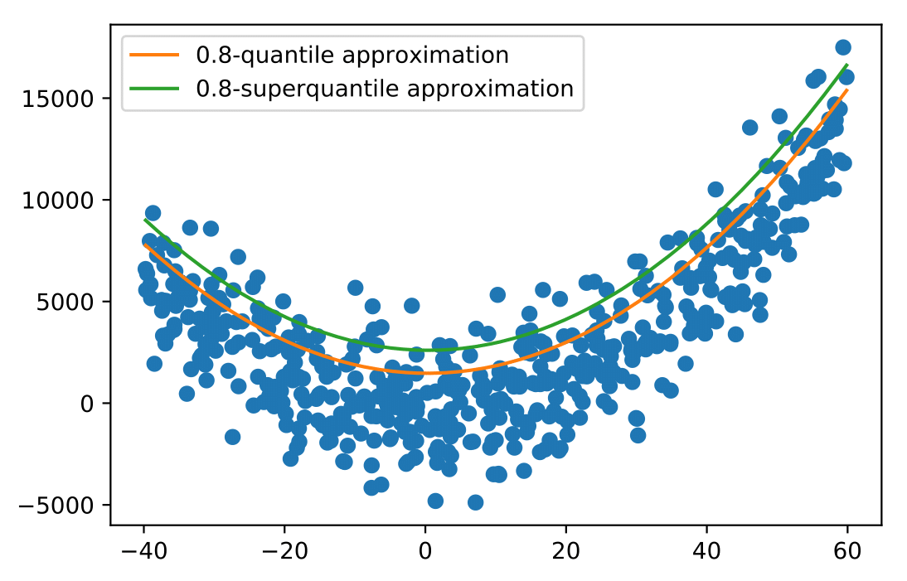

SPQR¶
SPQR is a python toolbox for optimization of superquantile-based risk measures.For more details, we refer to the companion paper “First Order Algorithms for Minimization of superquantile-based Risk Measures”.
Overview¶
For a couple of features and labels \((X,y)\),this toolbox is aimed at minimizing functions of the form :
where \(\text{CVAR}\) denotes the superquantile, also called “conditional value at risk”, “average value at risk” or “expected shortfall” and loss function \(L\) is assumed to be provided by the user together with the dataset \((X,y)\).
We build oracles for the nonsmooth function \(\phi\) and for a smoothed counterpart \(\phi_{\mu}\). Various first-order algorithms are proposed to minimise these 2 functions. Among these first order algorithms, one can find the Dual Averaging Method, Nesterov Accelerated Method or BFGS. For instance, quantile regression and superquantile regression can be performed with this toolbox :
{kind=link}
A deeper insight of the toolbox is made possible through a jupyter notebook available at https://github.com/yassine-laguel/spqr/blob/master/docs/toolbox_demonstration.ipynb
Table of Contents¶
Table of Contents
Authors¶
Yassine Laguel